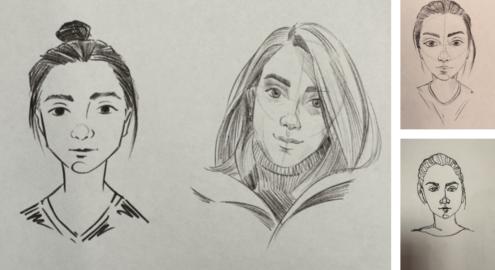
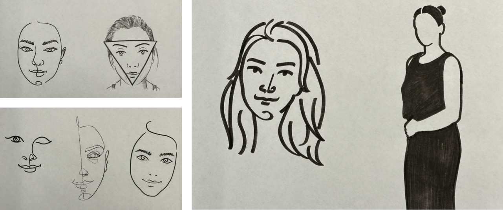

Sketches
My sketches show how I explore ideas and experiment with different expressions. I use lines and shapes to create details, perspectives, and narratives. The sketches help me quickly generate ideas and develop concepts visually.


